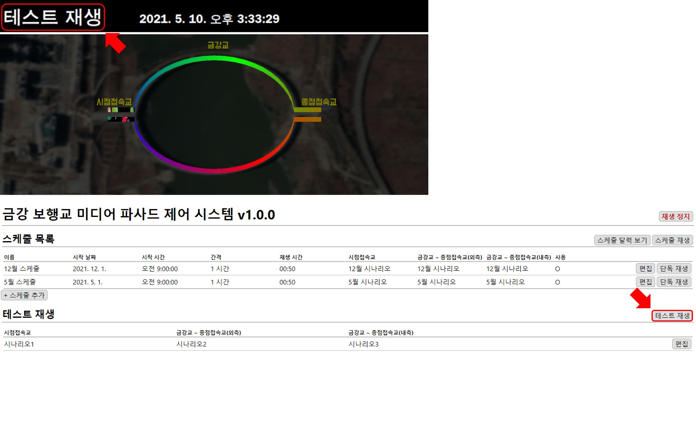
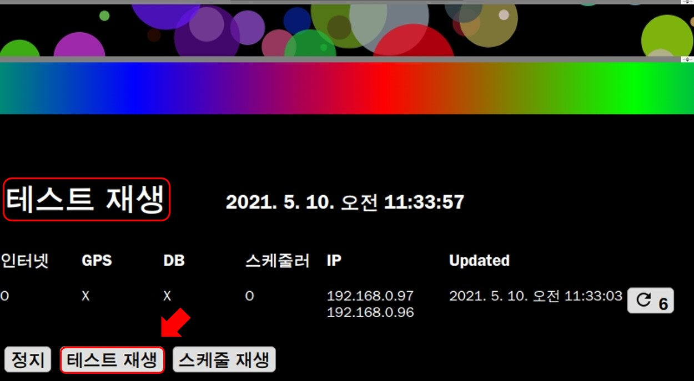
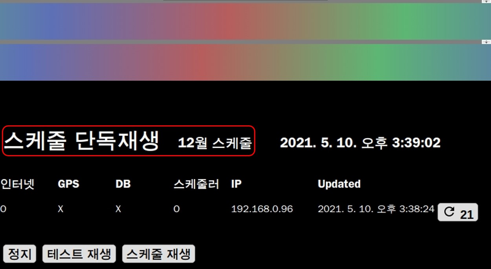

MFPlayer 재생
재생 상태 확인
현재 재생 상태는 홈 화면과 MMBA 화면에서 확인할 수 있습니다.
홈
1. 동작 상태 와 2. 가상 재생 화면이 표시됩니다.

MMBA
1. 재생 중인 시나리오 와 2. 동작 상태가 표시됩니다. MMBA 제어창의 자세한 설명은 제어창에서 설명하겠습니다.

재생 하기
테스트 재생
테스트 재생은 시나리오만 추가해 별도의 스케줄 시간을 지정하지 않고 시나리오만 단독으로 재생합니다. 테스트 재생은 기본적으로 생성되어 있고 시나리오는 수정할 수 있습니다. 테스트 재생 수정 방법은 테스트 재생에서 설명하겠습니다.
홈 화면에서 테스트 재생 버튼을 누르면 테스트 재생의 시나리오가 재생됩니다.

MMBA 화면에서도 확인과 재생이 가능합니다.

스케줄 단독 재생
테스트 재생과 다르게 스케줄 시간을 가지고 있지만 단독 재생 시 시간과 관계없이 시나리오만 단독으로 재생합니다.
21년 12월부터 재생되는 스케줄이 있습니다. 현재 21년 5월이라고 가정했을 때 재생되지 않는 스케줄이지만 단독 재생버튼을 누르면 시간과 관계없이 재생할 수 있습니다.

MMBA 화면에서도 확인할 수 있습니다.

스케줄 재생
시나리오가 스케줄에 맞게 재생됩니다. 현재 21년 5월이라고 가정했을 때 여러 스케줄 중 현재 시간과 일치하는 5월 스케줄이 재생됩니다.

MMBA 화면에서도 확인과 재생이 가능합니다.